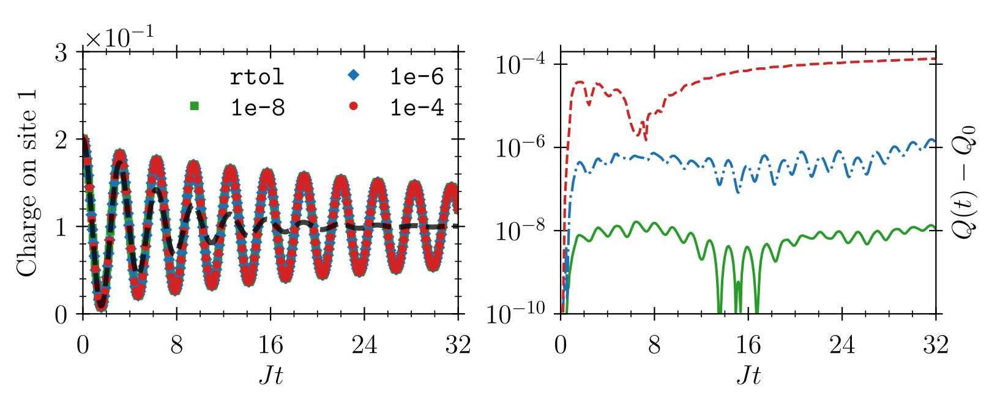

Fermi-Hubbard Model II
This example is the continuation of Fermi-Hubbard Model I. It is recommended that you familiarize yourself with the latter first.
In part II of our example about the Fermi-Hubbard model, we will solve the so-called $T$-matrix approximation, which is a "non-perturbative" self-energy resummation. As we saw in part I, in the standard perturbative second Born approximation, the self-energies are given by
\[\begin{align*} \Sigma^\lessgtr_{ij, \uparrow} (t, t') = \mathrm{i}U^2 \Phi^\lessgtr_{ij}(t, t') G^\gtrless_{ji, \downarrow}(t', t),\\ \Sigma^\lessgtr_{ij, \downarrow}(t, t') = \mathrm{i}U^2 \Phi^\lessgtr_{ij}(t, t')G^\gtrless_{ji, \uparrow}(t', t), \end{align*}\]
where
\[\begin{align*} \left[\boldsymbol{\Phi}^\lessgtr(t, t')\right]_{ij} = \Phi^\lessgtr_{ij}(t, t') = -i G^\lessgtr_{ij, \uparrow}(t, t') G^\lessgtr_{ij, \downarrow}(t, t'). \end{align*}\]
If we now define the so-called $T$-matrix
\[\begin{align*} \boldsymbol{T}(t, t') = \boldsymbol{\Phi}(t, t') - U \int_{\mathcal{C}}\mathrm{d}s\; \boldsymbol{\Phi}(t, s) \boldsymbol{T}(s, t'), \end{align*}\]
the new self-energies in $T$-matrix approximation become
\[\begin{align*} \Sigma^\lessgtr_{ij, \uparrow} (t, t') = \mathrm{i}U^2 T^\lessgtr_{ij}(t, t') G^\gtrless_{ji, \downarrow}(t', t),\\ \Sigma^\lessgtr_{ij, \downarrow}(t, t') = \mathrm{i}U^2 T^\lessgtr_{ij}(t, t')G^\gtrless_{ji, \uparrow}(t', t), \end{align*}\]
While we keep the same initial conditions as in Fermi-Hubbard Model I, we intrdoce a new data struct that also holds the $T$-matrix (and the "bubbles" $\Phi$ since this is more efficient):
Base.@kwdef struct FermiHubbardDataTM{T}
GL_u::T
GG_u::T
GL_d::T
GG_d::T
ΣL_u::T = zero(GL_u)
ΣG_u::T = zero(GG_u)
ΣL_d::T = zero(GL_d)
ΣG_d::T = zero(GG_d)
TL::T = zero(GL_u)
TG::T = zero(GG_u)
ΦL::T = zero(GL_u)
ΦG::T = zero(GG_u)
end
data = FermiHubbardDataTM(GL_u=GL_u, GG_u=GG_u, GL_d=GL_d, GG_d=GG_d)
# Initialize T-matrix
data.TL[1, 1] = -1.0im .* GL_u[1, 1] .* GL_d[1, 1]
data.TG[1, 1] = -1.0im .* GG_u[1, 1] .* GG_d[1, 1]
data.ΦL[1, 1] = data.TL[1, 1]
data.ΦG[1, 1] = data.TG[1, 1]As should be clear from the new definition of the self-energies in terms of the $T$-matrix, the former now contain additional time integrals. This means that at every time step, on top of the Volterra integro-differential equations (VIDEs), we now also have to solve so-called Volterra integral equations (VIEs). Furthermore, it is important for stability reasons to solve these VIEs implicitly. For a more detailed discussion, please consult our paper.
Accordingly, we introduce an auxiliary fixed-point solver that does this for us:
function fixed_point(F::Function, x0::AbstractArray;
mixing::Float64=0.5,
abstol::Float64=1e-12,
maxiter::Int=1000,
verbose::Bool=true,
norm=x -> LinearAlgebra.norm(x, Inf)
)
x_old = copy(x0)
step = 0
while step < maxiter
x = F(x_old)
res = norm(x - x_old)
if verbose
@info "step: $step // res: $res"
end
if res < abstol
break
end
@. x_old = mixing * x + (1.0 - mixing) * x_old
step += 1
end
if step == maxiter
@warn "No convergence reached."
end
return x_old
endInstead of writing one ourselves, we could also have worked directly with NLsolve.jl. Note that to keep our number of dependencies low, we have opted for not including this by default.
As in part I, we define our FermiHubbardModel, yet this time with a stronger interaction:
# Interaction parameter
const U₀ = 2.0
model = FermiHubbardModel(U = t -> U₀)The previous callback second_Born! is now replaced with the following:
# Callback function for the self-energies
function T_matrix!(model, data, times, h1, h2, t, t′)
# Unpack data and model
(; GL_u, GG_u, GL_d, GG_d, TL, TG, ΣL_u, ΣG_u, ΣL_d, ΣG_d, ΦL, ΦG) = data
(; U) = model
# Real-time collision integral
∫dt1(A, B, C) = integrate1(h1, t, t′, A, B, C)
∫dt2(A, B, C) = integrate2(h2, t, t′, A, B, C)
# Resize self-energies etc. when Green functions are resized
if (n = size(GL_u, 3)) > size(ΣL_u, 3)
resize!(ΣL_u, n)
resize!(ΣG_u, n)
resize!(ΣL_d, n)
resize!(ΣG_d, n)
resize!(TL, n)
resize!(TG, n)
resize!(ΦL, n)
resize!(ΦG, n)
end
# The interaction varies as a function of the forward time (t+t')/2
U_t = U((times[t] + times[t′])/2)
# Set all Φs at the very first t′ since they are all known by then
if t′ == 1
for t′ in 1:t
ΦL[t, t′] = -1.0im .* GL_u[t, t′] .* GL_d[t, t′]
ΦG[t, t′] = -1.0im .* GG_u[t, t′] .* GG_d[t, t′]
end
end
# Solve VIEs implicitly
TL[t, t′], TG[t, t′] = fixed_point([ΦL[t, t′], ΦG[t, t′]]; mixing=0.5, verbose=false) do x
TL[t, t′], TG[t, t′] = x[1], x[2]
[
ΦL[t, t′] - U_t * (∫dt1(ΦG, ΦL, TL) + ∫dt2(ΦL, TL, TG)),
ΦG[t, t′] - U_t * (∫dt1(ΦG, ΦL, TG) + ∫dt2(ΦG, TL, TG))
]
end
# Define the self-energies
ΣL_u[t, t′] = 1.0im .* U_t^2 .* TL[t, t′] .* transpose(GG_d[t′, t])
ΣL_d[t, t′] = 1.0im .* U_t^2 .* TL[t, t′] .* transpose(GG_u[t′, t])
ΣG_u[t, t′] = 1.0im .* U_t^2 .* TG[t, t′] .* transpose(GL_d[t′, t])
ΣG_d[t, t′] = 1.0im .* U_t^2 .* TG[t, t′] .* transpose(GL_u[t′, t])
endFor a given final time tmax, and tolerances atol and rtol, kbsolve! is ready to solve the problem:
# Call the solver
sol = kbsolve!(
(x...) -> fv!(model, data, x...),
(x...) -> fd!(model, data, x...),
[data.GL_u, data.GG_u, data.GL_d, data.GG_d],
(0.0, tmax);
callback = (x...) -> T_matrix!(model, data, x...),
atol = atol,
rtol = rtol,
dtini=1e-10,
stop = x -> (println("t: $(x[end])"); flush(stdout); false)
)At large tmax=32 and with atol = 1e-2 rtol, we obtain

This confirms that the resummation performed by the T-matrix is indeed superior to the second Born approximation in the current regime of large $U$ and small occupation numbers!